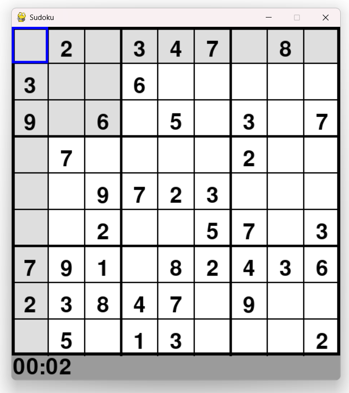
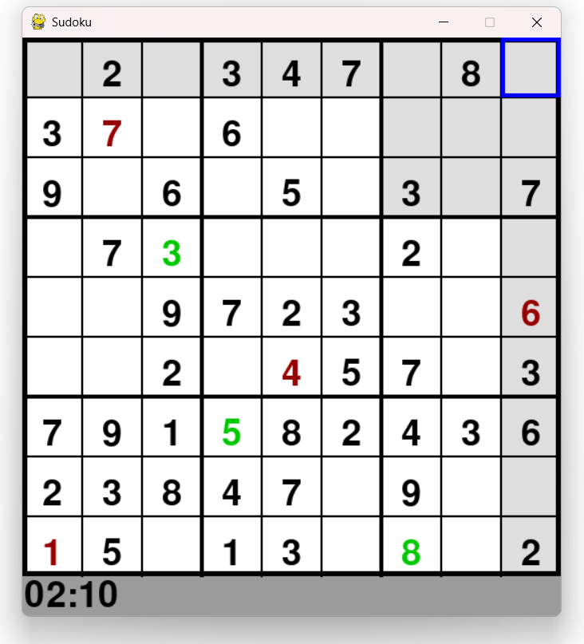
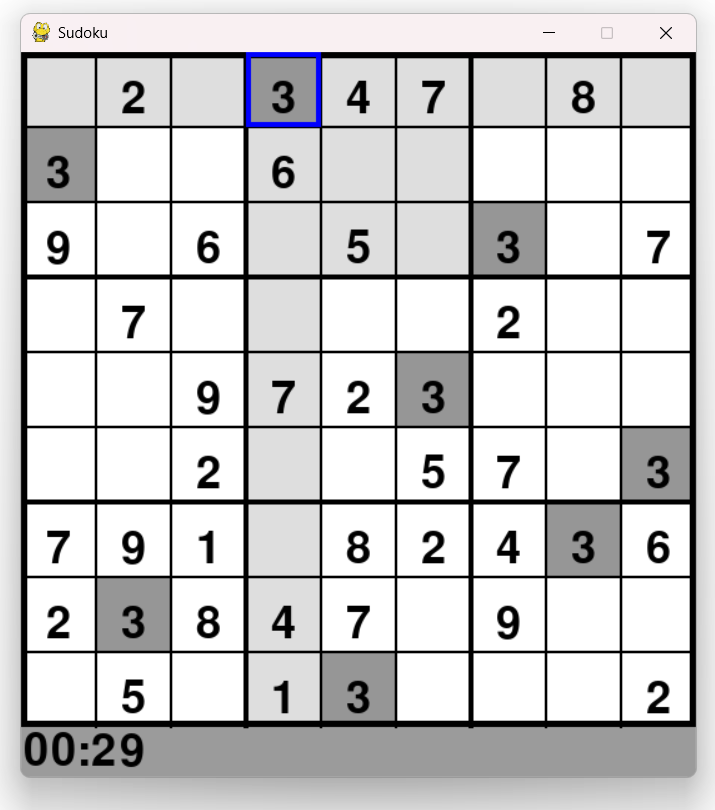

Generating a solvable puzzle
Every puzzle starts from an empty board. The generator drops 15 random valid numbers onto it, then hands the rest to a backtracking solver to fill in a complete, valid solution.
def solve(bo):
find = find_empty(bo)
if not find:
return True
else:
x, y = find
for i in range(1,10):
if valid(bo, i, (x, y)):
bo[y][x] = i
if solve(bo):
return True
bo[y][x] = 0
return FalseThis is classic backtracking, try a number, if it leads somewhere impossible later, undo it and try the next one. Once a full solution exists, 60 of its 81 cells get cleared at random to become the actual puzzle.

Checking a move
The same valid() function that builds the
solution also checks your own entries live, no duplicate in
the row, column, or 3x3 box.
def valid(bo, num, pos):
for i in range(len(bo[0])):
if bo[pos[1]][i] == num and pos[0] != i:
return False
for i in range(len(bo)):
if bo[i][pos[0]] == num and pos[1] != i:
return False
box_x = pos[0] // 3
box_y = pos[1] // 3
for i in range(box_y*3, box_y*3 + 3):
for j in range(box_x * 3, box_x*3 + 3):
if bo[i][j] == num and pos != [j,i]:
return False
return TrueType a number and it turns green if it's a legal placement, red if it conflicts with something already on the board.

Highlighting
Beyond just the selected cell, its whole row, column, and 3x3 box get a light grey highlight, and separately, every other cell sharing the same number gets a darker grey highlight of its own.
if (i == pos[0]) or (j == pos[1]) or ((i//3 == pos[0]//3) and (j//3 == pos[1]//3)):
pygame.draw.rect(win,(222,222,222),(i*size,j*size,size,size))
if ((check[j][i] == check[pos[1]][pos[0]]) and check[j][i] != 0):
pygame.draw.rect(win,(150,150,150),(i*size,j*size,size,size))
Solving and generating
Pressing S instantly reveals the full solution,
pressing Space throws away the current puzzle
and generates a brand new one, with the timer resetting to
zero either way.